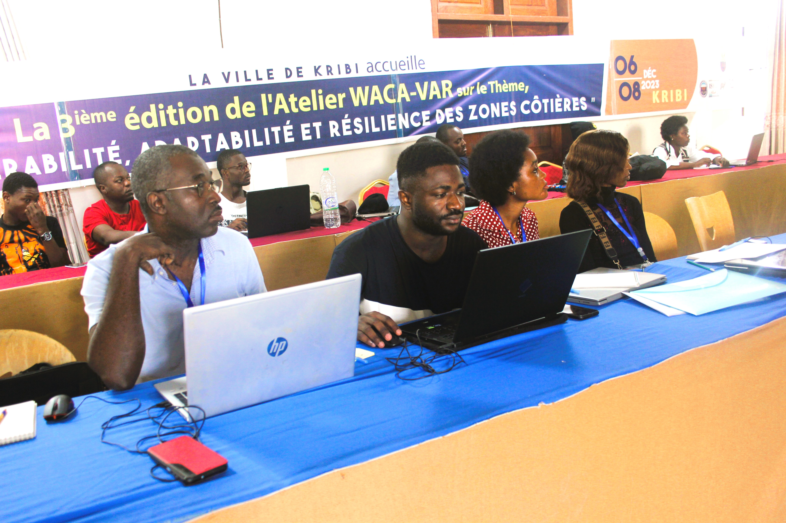
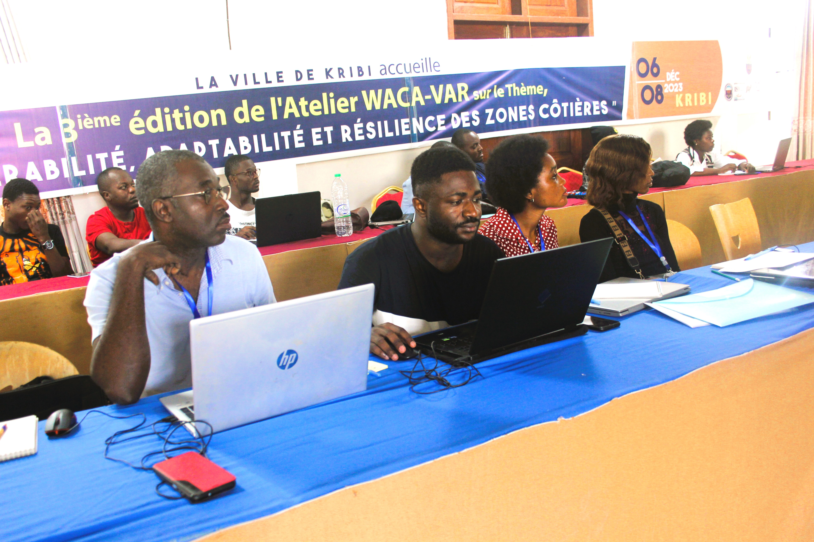

Chounna Yemele Gergino
Environmental Engineer and Researcher.
Address: Padova, Italy
Blog
💧 European Geological Union (EGU) 2024: Unveiling Coastal Vulnerabilities and Forging Research Connections
Date: April 26, 2024
Explore my enriching experience at the European Geosciences Union General Assembly 2024 (EGU24) held in Vienna, Austria, from April 15th to 19th. This gathering, comprising more than 16,000 participants, served as a hub for knowledge exchange and scientific exploration, offering a platform for researchers worldwide to converge and showcase their groundbreaking work.
During this event, I presented the preliminary findings of my PhD research, focusing on the dynamics of coastal resilience, particularly the vulnerability of coastal cities and mangroves along the low-lying coastland of Cameroon. By examining the interplay between land subsidence, sea level rise, and groundwater extraction, this study highlights the multifaceted challenges faced by these vulnerable ecosystems, especially in rapidly growing coastal cities in developing countries, where adaptive measures will not be sufficient in case of hazard occurrence.
Standing before an esteemed audience of peers, mentors, and experts, I have elucidated the preliminary outcomes of my investigations, emphasizing the urgency of addressing these pressing environmental concerns. The valuable feedback and constructive critiques I received during the presentation not only deepened my understanding but also propelled me further along the trajectory of scientific inquiry.
Beyond the academic sessions, EGU24 provided fertile ground for forging meaningful connections and fostering collaborative endeavors. Engaging with fellow researchers sharing similar research interests was an enriching experience that transcended disciplinary boundaries and ignited dialogues and exchanges that broadened my perspective and laid the groundwork for potential future collaborations and partnerships.
As I reflect on the array of activities and the wealth of knowledge gained at EGU24, I am deeply grateful for the opportunity to be part of such a dynamic and inclusive scientific community. The insights gained and connections forged during this conference undoubtedly resonate throughout my academic journey, shaping the trajectory of my research endeavours.
In conclusion, I extend my heartfelt appreciation to the organizers, sponsors, and fellow participants for making EGU24 a resounding success. May our collective pursuit of scientific excellence continue to inspire innovation and drive positive change in addressing the formidable challenges facing our planet.
Exploring Manoka Island: Conversations on Coastal Resilience
Date: January 21, 2024
I recently had the incredible opportunity to visit Manoka Island, a hidden gem located 60 km off the coast of Douala. It was not only a breathtaking experience but also an eye-opener as I engaged in meaningful conversations with the local population about their vulnerability to sea level rise and related coastal hazards. Manoka Island, with its pristine beaches and lush landscapes, is a haven that has captured my heart. However, beneath its beauty lies a community grappling with the challenges posed by environmental changes, particularly the impact of sea level rise and coastal hazards.
During my stay, I had the privilege of sitting down with members of the local population, who generously shared their insights and concerns. The discussions revolved around the visible effects of sea level rise, including frequent flooding during high tide, heightened coastal erosion, and the potential threat of land subsidence. The community’s dependence on the ocean for livelihoods and sustenance makes these challenges even more pressing. One striking observation was the existence of constructed coastal embankments, a local initiative aimed at preventing further coastal erosion. These embankments serve as a testament to the resilience of the community, showcasing their determination to protect their homes and way of life.
Witnessing firsthand the impact of these environmental changes underscored the importance of raising awareness about coastal resilience and sustainable practices. It also highlighted the urgent need for collaborative efforts to address the broader issues related to climate change and its consequences on vulnerable communities. As we continue to enjoy and appreciate the beauty of our natural surroundings, let’s also take a moment to reflect on the responsibility we share in safeguarding these environments and supporting communities that are disproportionately affected.
I encourage you to join me in spreading awareness about the challenges faced by places like Manoka Island and advocating for sustainable solutions. Together, we can make a difference and contribute to the well-being of our planet and its diverse inhabitants. Feel free to share your thoughts and ideas on how we can further support these communities and promote environmental sustainability. Let’s start a conversation and work towards a brighter, more resilient future for all.
🌍 Exploring the Depths: A Journey in Hydrogeological Research
Date: January 21, 2024
In this post, I share the incredible experience I had last Thursday, December 21st, 2023, at the Hydrogeological Research Group within the Department of Earth Sciences at the University of Douala. The day was filled with insightful presentations, engaging discussions, and a celebration of academic and professional growth. During the session, I had the privilege of presenting on various aspects of my academic and professional journey, highlighting my PhD research project on land subsidence and my Master’s research on hydrogeochemistry.
It was an opportunity to delve into the intricacies of my work, sharing the challenges faced, methodologies employed, and the significant findings that have emerged from these endeavours. Beyond my personal journey, I emphasized the importance of professional growth and networking on a global scale. I shared valuable insights on how platforms such as LinkedIn can be leveraged to widen one’s network, connect with peers, and engage with professional organizations. Navigating the ever-expanding landscape of opportunities becomes much more accessible when we are well-connected and informed.
What made the event even more enriching was the participation of fellow PhD and Master’s students, who showcased their exceptional research in the field of hydrogeology, with a specific focus on the Douala areas. The diversity of topics covered ranged from groundwater exploration to environmental impact assessments, providing a comprehensive view of the innovative work being carried out within our academic community. The collaborative atmosphere fostered during the event allowed for stimulating discussions, fostering a sense of unity and shared purpose among the participants. It was truly inspiring to witness the passion and dedication that each presenter brought to their work, further emphasizing the significance of hydrogeological research in addressing real-world challenges.
As we move forward, I encourage all aspiring researchers, students, and professionals in the field to actively engage with platforms that facilitate networking and knowledge-sharing. The wealth of opportunities available through such connections can open doors to collaboration, mentorship, and new perspectives that contribute to personal and collective growth. In conclusion, I extend my heartfelt gratitude to the Hydrogeological Research Group, the Department of Earth Sciences, and the University of Douala for providing this platform to share and celebrate our collective achievements. May this event serve as a catalyst for continued collaboration, innovation, and excellence in the field of hydrogeology. Here’s to the future of hydrogeological research and the boundless possibilities it holds!
🌍 WACA-VAR 2023 International Conference on Coastal Vulnerabilities, Monitoring, and Developments in Kribi, Cameroon
Date: December 09, 2023
I am thrilled to share my recent participation in the prestigious 2023 International Conference on « Coastal Vulnerabilities, Monitoring, and Developments » – WACA-VAR (West and Central Africa Coastal Areas – Vulnerability, Adaptability, and Resilience in a Changing Climate), which took place from the 04-08th December 2023 in the breath-taking coastal town of Kribi, Cameroon.This conference provided a unique platform for experts, researchers, and enthusiasts like myself to come together and delve deep into the fascinating world of coastal dynamics and morphological investigations.
Among the numerous insightful sessions, I had the incredible opportunity to attend specialized courses that broadened my understanding of various crucial topics: 1. MEPELS (Modèle d’Évolution des Plages et Environnements Littoraux Sableux): A comprehensive exploration of the model for the evolution of sandy beaches and littoral environments. 2. S2Shores (Bathymetry Estimation using Sentinel 2 Satellite Imagery): An eye-opening course on leveraging Sentinel 2 satellite imagery for accurate bathymetry estimation. 3. Methodology for Calculating Vulnerability Indices to Coastal Hazards (Submersion and Erosion): In-depth insights into calculating vulnerability indices, essential for understanding and addressing coastal hazards. 4. Geospatial Analysis and Environmental Indicators: Presentation of the Package mapme.biodiversity: An engaging presentation on mapme.biodiversity, shedding light on geospatial analysis and environmental indicators.
 
